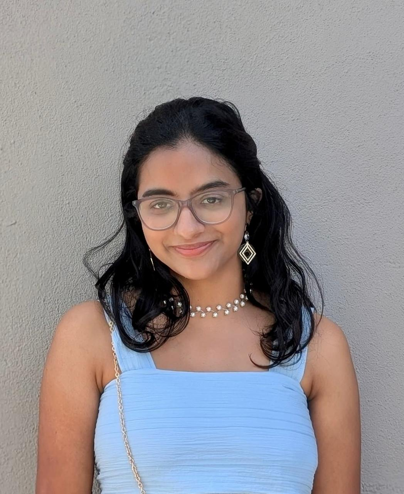
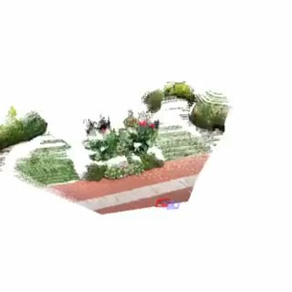
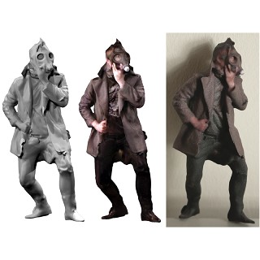

|
Tharuki Wijayarathne I am a Teaching Assistant in the Department of Civil Engineering at the University of Peradeniya. I graduated with First Class Honours in Civil Engineering with a GPA of 4.00/4.00, ranking 1st in Civil Engineering (1/143) and 1st in Engineering Batch 2019 (1/483). My research interests include structural engineering, performance-based wind design, high-rise buildings, structural dynamics, finite element modelling, and soil-structure interaction. I am currently conducting structural engineering research under the supervision of Prof. K. K. Wijesundara. I am actively seeking PhD opportunities in Structural Engineering. |
 |
{kind=link}
ResearchMy work focuses on the behaviour and design of structures subjected to wind and other complex loading conditions. I use analytical, numerical, and finite element methods to study high-rise serviceability, nonlinear structural response, bridge retrofitting, and soil-structure interaction. This work is currently supervised by Prof. K. K. Wijesundara. Selected publications and projects are presented below. |
UpdatesJune 2026: Awarded five academic prizes at the University of Peradeniya General Convocation 2026. June 2026: "Time-History-Based Evaluation of Wind-Induced Serviceability Response in High-Rise Buildings" was accepted for presentation at iPURSE 2026. |
Publications |
|
 |
Towards a Performance-Based Wind Design Framework for High-Rise Buildings Using Time-History Analysis
R. M. T. D. Wijayarathne, K. M. S. M. Jayarathna, K. K. Wijesundara Annual Sessions 2026, Society of Structural Engineers, Sri Lanka A time-history-based framework for evaluating wind-induced response and advancing performance-based wind design of high-rise buildings. |

|
Time-History-Based Evaluation of Wind-Induced Serviceability Response in High-Rise Buildings
R. M. T. D. Wijayarathne, K. M. S. M. Jayarathna, K. K. Wijesundara Proceedings of the Peradeniya University International Research Symposium and Exposition (iPURSE), 2026 Evaluation of high-rise building serviceability under wind loading using time-history response measures, including displacement and acceleration. |
Research Projects |
|

|
Performance-Based Design of High-Rise Buildings under Wind Loading
Final Year Research Project | November 2024 - August 2025 ETABS, STKO/OpenSees, Python Developed and validated high-rise wind-response models using linear and nonlinear time-history analysis. Generated wind time histories, benchmarked results against the CAARC wind-tunnel model, compared top displacement and acceleration, and assessed damping and modelling assumptions. Supervised by Prof. K. K. Wijesundara. |

|
Serviceability Wind Assessment of a 63-Storey High-Rise
NCD Consultants (Pvt) Ltd, Colombo | November 2025 - January 2026 ETABS, Python Conducted serviceability wind checks for a 63-storey building, evaluating occupant-comfort and serviceability criteria including peak and RMS acceleration and inter-storey drift. |

|
Yaka Bridge Pier Retrofitting: Finite Element Model Development
Research Project | December 2025 - February 2026 MIDAS FEA NX, SolidWorks Developed a detailed three-dimensional solid finite element model of the bridge pier to support structural assessment and verification of the proposed retrofit strategy. |
|
 |
Finite Element Analysis of an Existing Sewer Line under a Proposed Seven-Storey Raft Foundation
Research Project | April 2026 - June 2026 MIDAS FEA NX Performed two- and three-dimensional soil-structure interaction analyses for an existing sewer line near Kandy Railway Station. Modelled the raft, DCM piles, layered soil, sand cushion, and staged construction; evaluated ovaling, hoop and principal stresses, contact pressure, and settlement. Supervised by Prof. K. K. Wijesundara. |
Education |
|
|
B.Sc. Engineering Honours in Civil Engineering Faculty of Engineering, University of Peradeniya | 2021 - 2025 GPA: 4.00/4.00, First Class Honours Ranked 1st in Civil Engineering (1/143) and 1st in Engineering Batch 2019 (1/483) English-medium degree accredited under the Washington Accord |
MOOCs |
CSI ETABS Masterclass, Asian Institute of Engineering, 16 CPD hours, April 2025 Engineering Drawing and 3D Modelling using AutoCAD, March 2021 Diploma in Information Technology (International), ESOFT Metro Campus, February 2020 |
Academic Awards |
|
|
Ceylon Development Engineering Prize for Best Performance in Civil Engineering, 2025 Mr. Helarisi Abeyruwan Gold Medal, 2025 A. Thurairajah Prize for Geotechnics, 2025 H. B. De Silva Prize for Surveying in Civil Engineering, 2025 Prof. Nimal Seneviratne Award for Best Civil Engineering Project in the Structural and Materials Sub-discipline, 2025 First Place, ASCE Sri Lanka Section Student Chapter National Quiz Competition, Team BuildBrains, 2024 Participant, Seismic Performance of Building Design Competition 3.0, Bangkok, Thailand, 2025 |
|
Experience |
|
|
|
Teaching Assistant, Department of Civil Engineering, University of Peradeniya November 2025 - Present Conducting tutorials in Structural Design, Structural Analysis, Environmental Engineering Design, and CAD. |
|
|
Trainee Civil Engineer, Stems Consultants (Private) Ltd July 2024 - September 2024 Prepared structural drawings and design calculations. |
|
|
Trainee Civil Engineer, Senura Civil Engineering (Pvt) Ltd July 2023 - October 2023 Supported site supervision and construction-compliance activities. |
Background |
|
Skills |
Engineering: Structural analysis and design, finite element modelling, hydrological modelling, roadway design, site planning, and project management Structural Software: ETABS, SAP2000, Tekla Tedds, Tekla Structures, OpenSees, MIDAS FEA NX Design and Geospatial: AutoCAD, Civil 3D, ArcGIS, HEC-RAS, HEC-HMS Programming: Python, MATLAB, C# |
Activities |
Contributed to ENGEX 2025 through a scaled Jethawanaramaya model and numerical-modelling presentation. Participated in post-cyclone damage assessment in Sri Lanka's Central Province. Volunteered through Rotaract, Arunella, and Voice of Youth community initiatives. Best Performing Team, Evolucionar'22 Orientation Program, 2023. |
References |
Prof. K. K. Wijesundara, Professor and Head, Department of Civil Engineering, University of Peradeniya kushanw@eng.pdn.ac.lk | +94 71 268 4271 Dr. Sahan Bandara, Senior Lecturer, Department of Civil Engineering, University of Peradeniya sahan@eng.pdn.ac.lk | +94 71 745 0090 Dr. S. P. C. Perera, Senior Lecturer, Department of Engineering Mathematics, University of Peradeniya pperera@pdn.ac.lk | +94 77 438 4082 |
|
Tharuki Wijayarathne | Structural Engineering Research Portfolio |